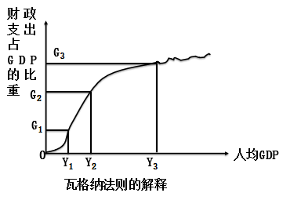
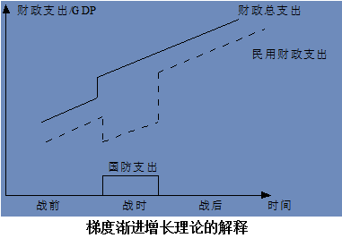

二、财政支出规模分析
(一)衡量财政活动规模的指标
1.反映财政活动规模的两个指标
财政支出占GDP(或GNP)的比重
2.反映财政支出规模及其变化的指标
- 财政支出增长率
- 财政支出增长弹性系数
- 财政支出增长边际倾向

(二)财政支出规模增长变化的一般趋势
瓦格纳法则
阿道夫·瓦格纳(1835～1917)是社会政策学派财政学的集大成者和资产阶级近代财政学的创造者,新历史学派代表人物.代表作有《政治经济学教程》(1876年)、《财政学》(1877～1901年).瓦格纳根据其所处政治经济及社会背景,通过吸收、整理、总结以前社会政策学派史泰因、谢夫勒等人的思想及观点,逐步形成了自己的以社会财政、税收思想为核心的理论体系.他把社会经济组织分为"个人的经济组织"、"共同的经济组织"和"慈善的经济组织"三种.财政是"共同的经济组织中由权利共同体构成的强制共同经济".并据此提出了新的国家职能观.认为国家的职能应有发展文化教育和增进社会福利的职能,国家应为"社会国家".
德国财政学家阿道夫·瓦格纳对19世纪的许多欧洲国家、日本、美国的财政支出的增长情况作了考察后认为,决定财政支出增长的力量,是可以用政治和经济的因素来解释.该法则又称为"政府活动扩张法则".
政治因素:国家职能扩展→政府职能的内在质量提高→财政支出扩大
经济因素:工业化→扩大的市场与市场主体间的关系日趋复杂→要求建立有关的司法和行政制度 →财政支出增长
城市化和人口密集问题→外溢性→必须政府解决
此外,瓦格纳把教育、娱乐、文化、保健与福利等方面的政府支出水平由它们需求的收入弹性决定,当人均收入增加时,财政支出中用于这些方面的支出也会大幅度增加,即随着经济中人均收入的增长,财政支出的相对规模也增长了.
瓦格纳法则集中分析了财政支出的需求因素.他的法则假定国家是一个有机体,避开了公共选择问题,认为收入增长几乎不可避免会导致公共部门的扩张.
皮科克(Peacock)和威丝曼(Wiseman)的替代-规模效应理论
在对1890-1955年间英国财政支出情况进行研究的基础上,英国经济学家皮科克和威斯曼在1961年提出了财政支出增长的梯度渐进梯度理论.他们认为,导致财政支出增长的因素有内在因素与外在因素,并认为外在因素是说明财政支出超过GNP增长的主要原因.这一观点也被称为皮科克——威斯曼假说(The Peacock-Wiseman Hypothesis).
Alan T. Peacock, Jack Wiseman. The Growth of Public Expenditure in the United Kingdom [M]. Princeton University Press, 1961.
Alan T. Peacock, Jack Wiseman, Jindrich Veverka. The Growth of Public Expenditure in the United Kingdom (Modern Revivals in Economics) [M]. Gregg Revivals, 1993.
梯度渐进增长理论主要观点:
在正常的时期,居民的税收容忍水平是稳定的,政府的财政支出也是比较稳定的,从长期来看是一种渐进的增长趋势.
当社会出现激变时,如战争、经济危机的出现,财政支出需要大幅提升.纳税人的税收容忍水平将会提高,整个政府财政支出在渐进的过程中呈现出一个台阶式的增长形态.替代效应
当社会激变过去之后,政府不会轻易容许已经上升的税率降到原有的水平,私人也会因为遭受战乱之苦的缘故接受较高的税率,因此,政府财政支出水平虽然会下降,但下降的幅度不会太大,下降后的水平依然会比激变前高,在此基础上财政支出继续以稳定的方式向前发展.规模效应
(三)我国财政支出规模发展变化的特殊性
1.我国财政支出增长率和财政支出占GDP比重发展变化趋势
我国财政支出规模的变化
从1979-2004年,中国财政支出绝对额,除了1980年代头几年,基本上是一直增长的,但中国财政支出占GDP的比重从1979年开始,经历了一个迅速下滑的过程,1995和1996年甚至降到了11.7%.这一趋势从1997年开始得到扭转,此后该比重才逐步上升,到本世纪才重新超过了20％
1998年实行的积极财政政策(扩张性财政政策),增加了政府用于基础设施投资等方面的支出,使财政支出有较大的增长.近几年来,中国财政收入连年高速增长,税收自1998年以来每年都大规模增收.相应地,财政支出也随之增加
我国财政支出占GDP比重发展变化原因的分析:
- 从计划到市场的改革,本身就意味着政府从市场的退出过程,这一趋势的出现是政府支出内在减少趋势的反映
- 预算内收入占GDP的比重下降,根据收支平衡政策,财政支出相应下降
- 政府支出秩序方面的原因.与西方发达国家相比,中国财政支出不仅包括预算内支出,还包括预算外支出和制度外支出
- 有的学者认为,中国的GDP统计存在水份,财政支出与GDP的比重并没有表中所列的那么低
(四)财政支出的影响因素暨合理规模选择的路径
1.影响财政支出规模的宏观因素分析
- 经济性因素.主要指经济发展的水平、经济体制以及中长期发展战略和当前经济政策等.
- 政治性因素.政治性因素对财政支出规模的影响主要体现在三个方面:一是政局是否稳定；二是政体结构和行政效率；三是政府干预政策.
- 社会性因素.如人口、就业、医疗卫生、社会救济、社会保障以及城镇化等因素,都会在很大程度上影响财政支出规模.
2.影响财政支出规模的微观因素
看书
3.政治决策程序
看书